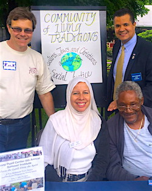

Friends,
During this holiday season, I pause as a Muslim, as I do every year, to rehearse the reasons why I should not feel alienated in my own land, the place of my birth.
Watching Christmas and Hanukkah observed from Thanksgiving, I brace myself for a month or so of intensified otherness. Feeling strange in a familiar land that rejects and even loathes me because of my scarf, I steel myself to the fact that this year is different.
There is a chill in the air beyond the cold and that can be expressed and repressed in one word: FEAR.
Islamophobia, once greatly unspoken or chided, is now the articulated norm: headline news as Republican presidential front-runners vie to malign the Muslim community, while Democratic contenders and many governors rationalize, ratchet up and coalesce around xenophobia and their unwillingness to accept Middle Eastern refugees.
This year, unlike other years, Islamophobia has become political tender. This year people are afraid of me and instinctively I become afraid too.
So I shrug it off and fall back to the old defensive pattern of rehearsing the reasons why I should not feel alienated each December. I pause with satisfaction to reflect upon how much Islam shares with Christian and Jewish scriptures and traditions, similar to the way the Gospels of Jesus enhance the Old Testament. In the Holy Qur'an, the first miracle of Jesus is that he spoke sonorously from the cradle both defending his mother's honor and declaring his submission and utter devotion to the Lord:
"I am indeed a slave of God. He has given me the Book and made me a Prophet, and He has made me blessed wherever I may be. And He has enjoined upon me prayers, and to pay the alms as long as I live, and made me kind to my mother, and He has not made me insolent, unblessed. And may peace be upon me the day I was born, and the day I die, and on the Day I shall be raised to life." (Qur'an, Mary, 30-33)
Like Christians, we esteem the Virgin Mary as the ultimate female role model, evidenced by the chapter of the Qur'an named after her. We too await the Apocalypse and the return of Jesus the Messiah to fight the Anti-Christ. Although we don't celebrate Christmas, we love Jesus and the Mother Mary. They and their messages and examples are ours too.
Similarly, we honor and revere Moses. While Hanukkah is not part of our tradition, Passover is and many Muslims fast on its occasion. Moses is the most-mentioned prophet in the Qur'an and the Muslim narrative of the Exodus has a strong parallel to the Biblical narrative. It was Moses, with the help and guidance of God, who led the Jews out of Egypt towards a land of promise. The Almighty says in the Qur'an:
"And remember the time when We saved you from Pharaoh's people, who afflicted you with cruel suffering, slaughtering your sons and sparing only your women -- which was an tremendous trial from your Sustainer; and when We cleft the sea before you, and thus saved you and caused Pharaoh's people to drown before your very eyes." (Qur'an, The Cow, 47-50)
And so, I make my annual holiday season recount of why Christians and Jews should love rather than hate or fear me. It comes to mind that in this world in which we live -- where injustices and occupations abound, and this country in which we live, where the military industrial complex and prison industrial complex are flip sides to the coin and tender of the U.S. empire -- there is hope. The story of Moses is a reminder that God will not let injustice thrive indefinitely. Nothing is impossible for a just, loving, merciful and eternal God. The final abode is with Him, and peace is inevitable.
 In the meantime, during this holiday season, I am grateful to the Fellowship of Reconciliation for embracing me as a Muslim and taking steps to turn the tide of Islamophobia as it strives to achieve a just, free and peaceful world. In the meantime, during this holiday season, I am grateful to the Fellowship of Reconciliation for embracing me as a Muslim and taking steps to turn the tide of Islamophobia as it strives to achieve a just, free and peaceful world.
One of the things I love about FOR is that it recognizes that peace is at the core of all faiths, while it respects differences. It envisions a world where oppressive structures are dismantled, and where people live in harmony with the earth, nurtured by diverse spiritual traditions that foster compassion, solidarity and reconciliation. And with these thoughts, my concerns that Muslims are misunderstood, alienated and victimized do lessen; and love, gratitude and happiness in my heart do rise.
I know that Peace on Earth will one day prevail.
Susan Smith, pictured left at center, is a member of the Community of Living Traditions at Stony Point Center, where she engages in community outreach and peace and social justice work.
In her spare time, she hosts "Ferguson to Palestine," a Vassar College radio program available on iTunes, and facilitates trainings to combat intra-Muslim racism.
Images: Interfaith Peace Walk; poster by Micah Bazant, courtesy Jewish Voice for Peace; FOR Executive Director Rev. Kristin Stoneking and FOR National Council Vice-Chair Sahar Alsahlani; Susan Smith with members of the Community of Living Traditions, courtesy Susan Smith. |